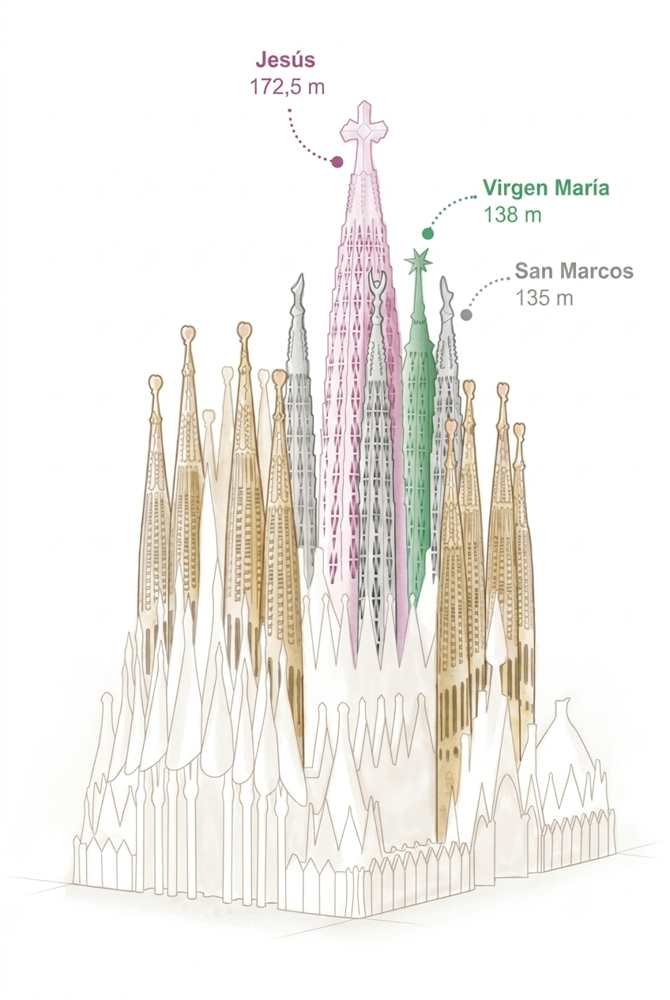

.webp "Vista de la torre de Jesús")
La última pieza magistral ha sido agregada a la Basílica de la Sagrada Familia,
diseñada por Antoni Gaudí.
La Torre de Jesucristo tiene una altura de 172,5 metros, convirtiéndola en la torre de iglesia más alta del mundo.
Datos clave
Altura:
172,5 m
Diseño:
Antoni Gaudí
Inicio:
1882
Finalización:
2026
Comparativa de torres
| Torre | Altura | Finalización |
|---|---|---|
| Jesucristo | 172,5m | 2026 |
| Virgen María | 138m | 2025 |
| San Marcos | 135m | 2025 |

Galería arquitectónica


¿Quieres ver la Galeria Completa?
clic aquí
Enterate de todas las novedades de la Basílica
Suscríbete a nuestro Boletin